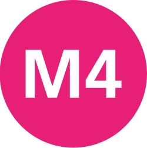
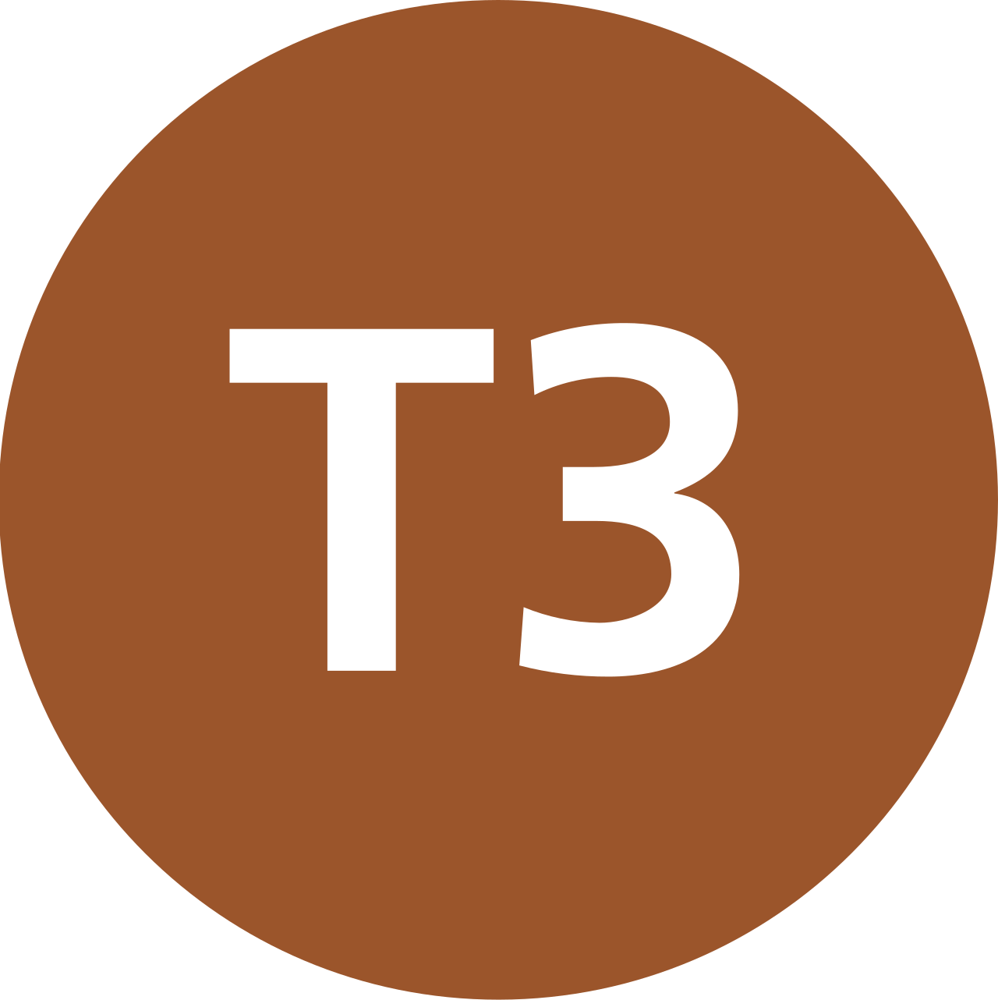

Yolcu İstatistikleri
Hatlara göre yolcu verileri ve dönemsel karşılaştırmalar.
5 hat
Bir hattın istatistik tablosunu görüntülemek için başlığı seçin.

M4 Kadıköy - Sabiha Gökçen Havalimanı Metro Hattı
| Gösterge | Dönem | Yolcu sayısı |
|---|---|---|
| Günlük ortalama | 2024 | 300.480 |
| Günlük taşıma rekoru | 2023 | 387.372 |
M5 Üsküdar - Sultanbeyli Metro Hattı
| Gösterge | Dönem | Yolcu sayısı |
|---|---|---|
| Günlük ortalama | 2024 | 293.747 |
| Günlük taşıma rekoru | 2023 | 345.194 |
M8 Bostancı - Parseller Metro Hattı
| Gösterge | Dönem | Yolcu sayısı |
|---|---|---|
| Günlük ortalama | 2023 | 43.058 |
B1 Marmaray Halkalı - Gebze Banliyö Hattı
| Gösterge | Dönem | Yolcu sayısı |
|---|---|---|
| Yıllık toplam | 2022 | 190.754.000 |
| Günlük ortalama | 2022 | 522.614 |
| Yıllık toplam | 2024 | 218.886.016 |
| Günlük ortalama | 2024 | 604.657 |

T3 Kadıköy - Moda Nostaljik Tramvay Hattı
| Gösterge | Dönem | Yolcu sayısı |
|---|---|---|
| Günlük ortalama | Güncel veri | 2.500 |